Potrava
Slunečnice černá

V létě čerstvou slunečnici po odkvětu.
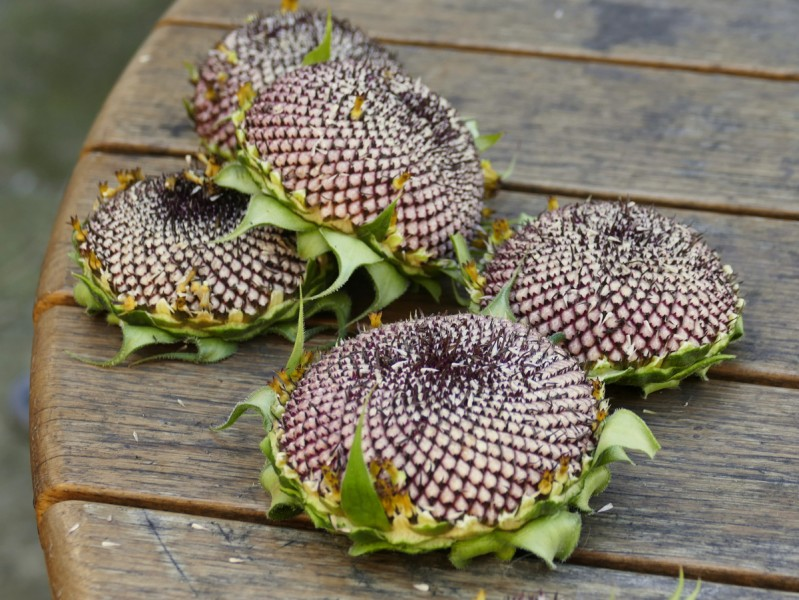Konopné semeno

Oves loupaný
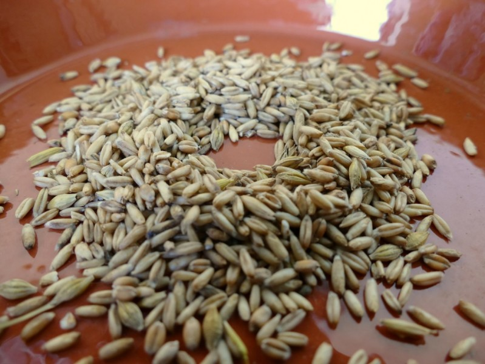Proso MIX
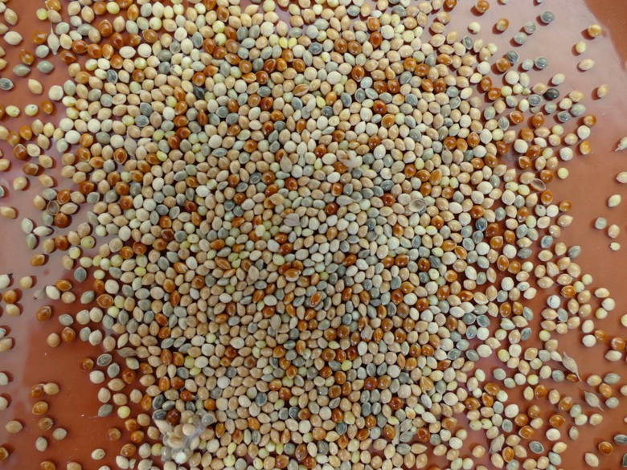Kardi
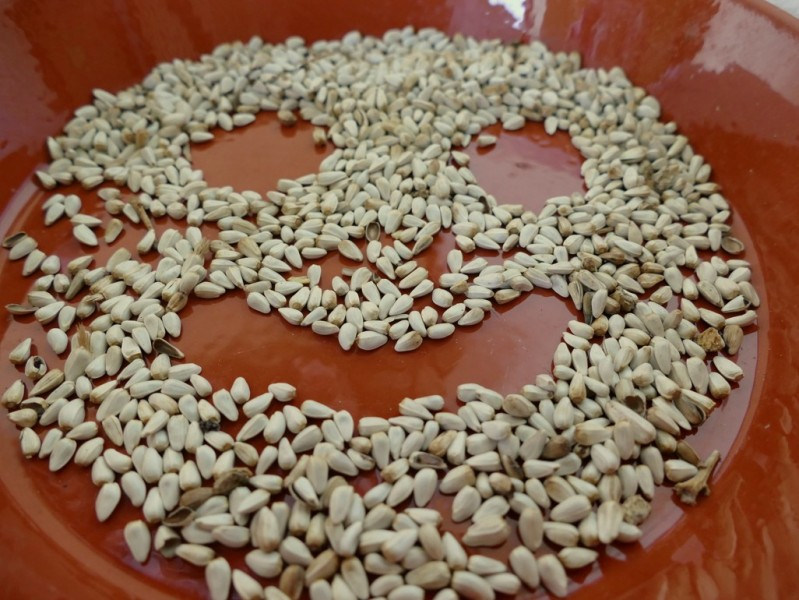Zelenina MIX

Pšenice v klasech
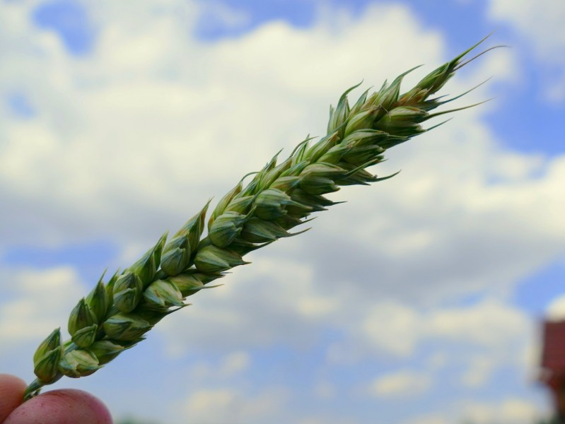Pšenice v mléčné zralosti
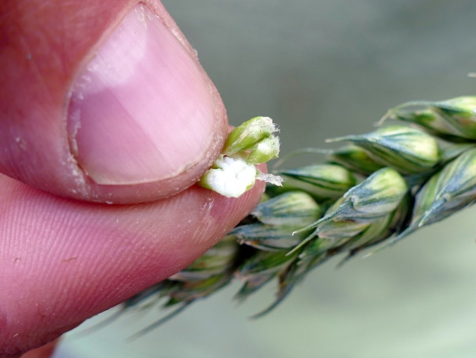Ječmen v mléčné zralosti
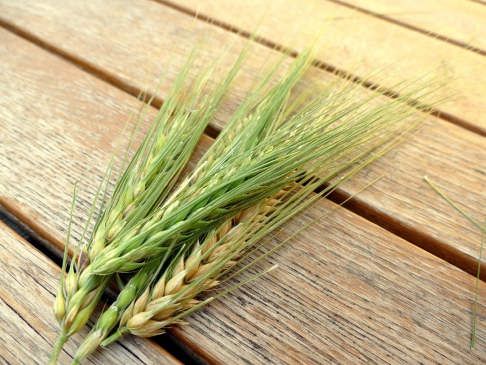Proso senegalské čerstvé

Proso seté čerstvé

Lesknice čerstvá

Šťavel kyselý - květ
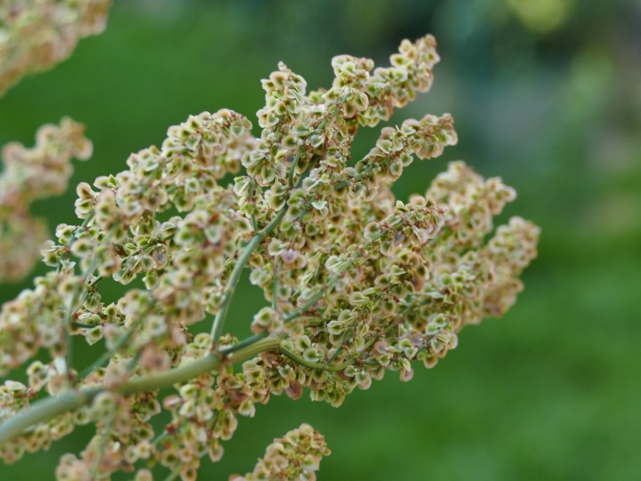Šťovík koňský - květ

Oblíbený ptačinec žabinec
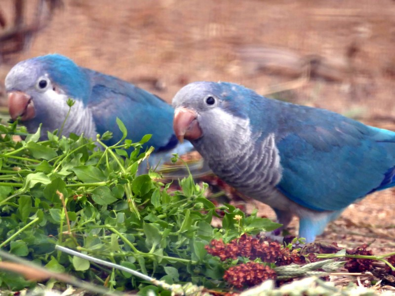Hrášek

Maliiny a ostružiny
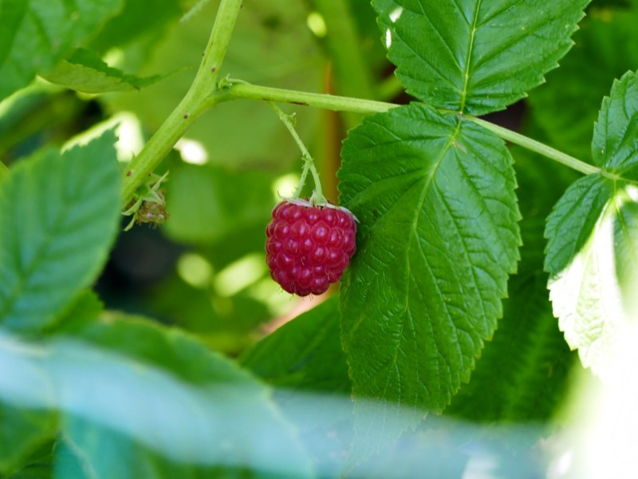Třešně
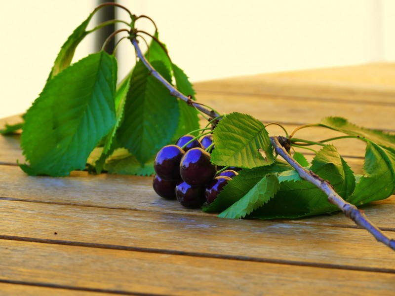